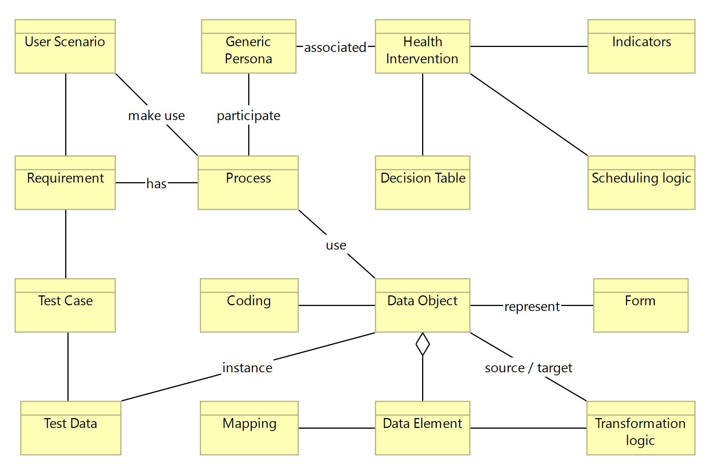

DRAFT SMART Guidelines L3 SOP
0.2.1 - CI Build

DRAFT SMART Guidelines L3 SOP
0.2.1 - CI Build

DRAFT SMART Guidelines L3 SOP, published by TBD. This guide is not an authorized publication; it is the continuous build for version 0.2.1 built by the FHIR (HL7® FHIR® Standard) CI Build. This version is based on the current content of https://github.com/WorldHealthOrganization/smart-ig-starter-kit and changes regularly. See the Directory of published versions
The SMART Guidelines define the provision of guidance and monitoring using a structured, standardized representation of knowledge of different types:

A narrative or situation where users interact with a system, environment, or service. User scenarios guide many subsequent knowledge representation processes to ensure coverage and focus.
An archetype representing a person interacting with the system. This aids in understanding the motivations and potential actions of users within scenarios.
Initiatives about prevention, monitoring or addressing medical conditions.
A collection of related tasks or activities that achieve a specific organizational goal. Business processes often encompass or give rise to multiple user scenarios, especially in complex systems.
A detailed specification of a system’s needs, derived from user scenarios, personas, and business processes. It forms the foundation for system design and testing.
A structured method for representing complex decision logic. This is a basis for developing business processes and transformation logic.
The rules used to schedule tasks and interventions.
Metrics used to measure the performance or outcomes of business processes and health interventions, and guide decision-making.
A comprehensive representation of information, often deriving from business processes or requirements. They encapsulate multiple data elements.
An atomic piece of data, often a part of data objects. Elements get transformed, coded, or mapped as per transformation logic or coding systems.
The assignment of codes to data elements, where applicable, using standard terminologies and mapped to other codes as needed. Coding aids in ensuring that data elements are universally understood and interpretable.
Mapping the codes from one system to another, ensuring that multiple representations, when possible, are documented and accessible.
A tool for data collection, often driven by the requirements of business processes or the need to collect specific data.
The rules applied to change data from one format or structure to another. Often influenced by decision tables, coding, and mapping to ensure data integrity.
A set of conditions under which a system is assessed, often derived from requirements and user scenarios. They ensure the system performs as expected.
Specific data used to execute test cases, often derived from data objects and elements, ensuring testing of system functionalities.